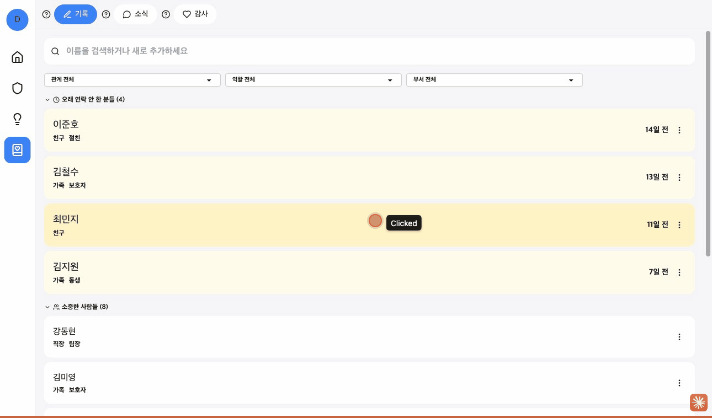
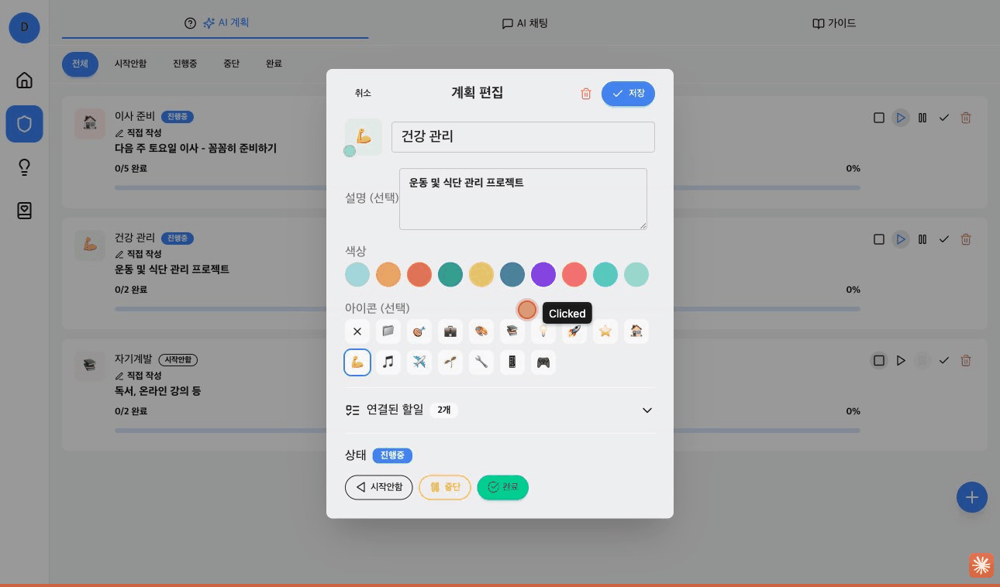
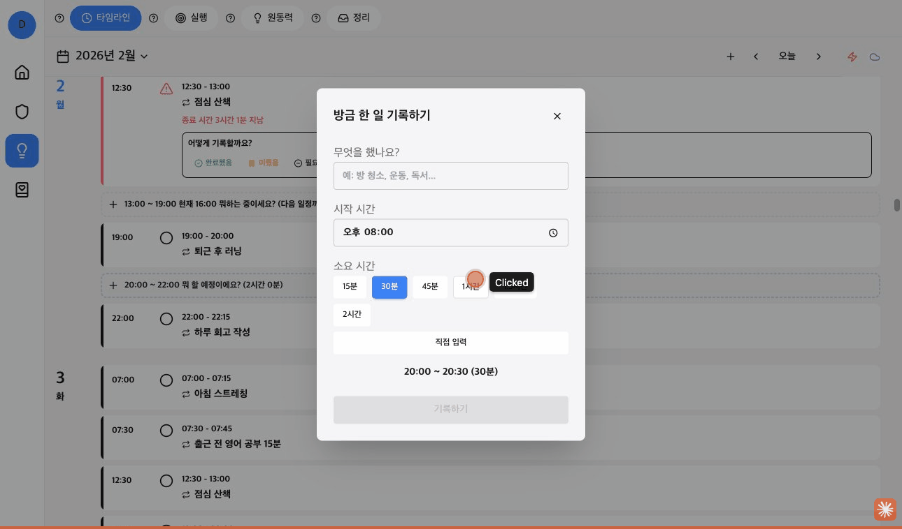
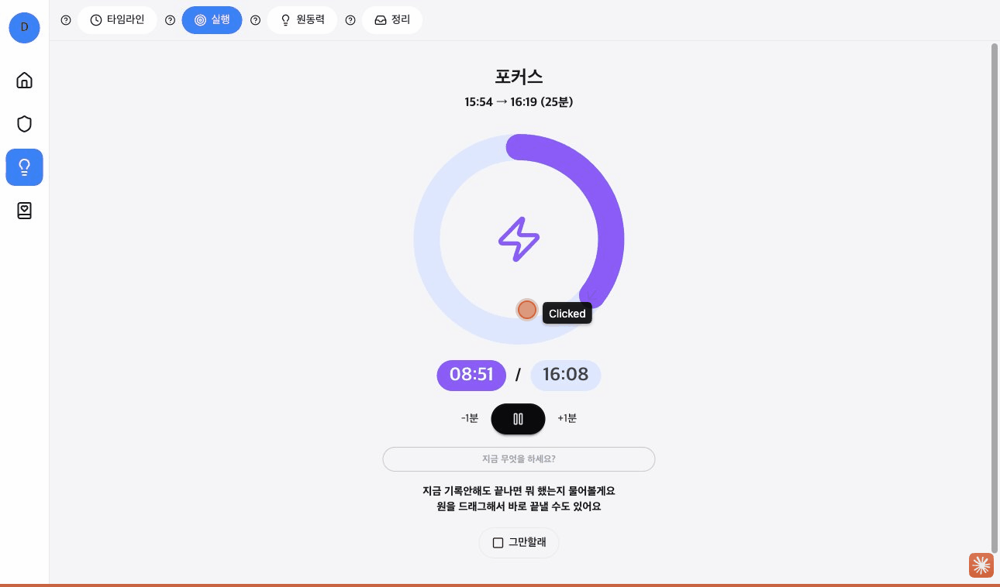
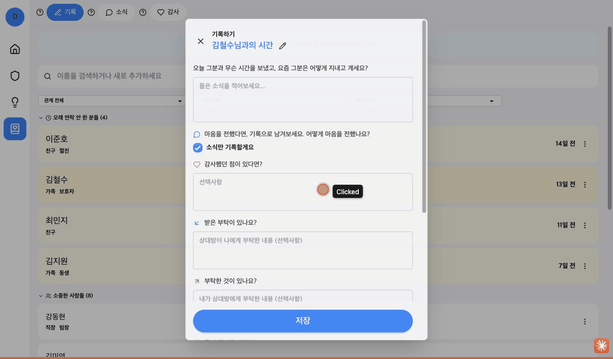
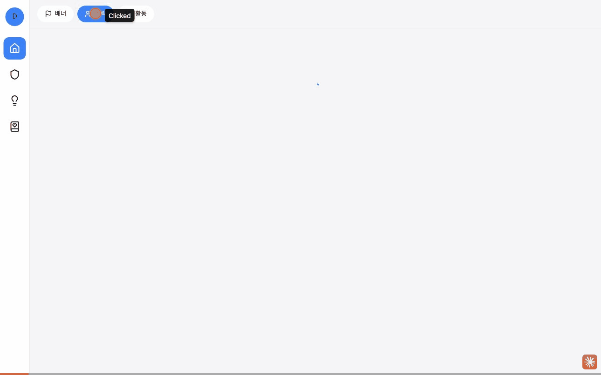

ADHD 성향을 위한 할일 관리 앱
| 프로젝트명 | DayStep - 나만의 할일 관리 |
|---|---|
| 개발 기간 | 2025.11 ~ 현재 (개인 프로젝트) |
| 배포 URL | https://daystep.vercel.app/?demo=true |
| 플랫폼 | Web (PWA), iOS, Android |
| 역할 | 기획, 디자인, 프론트엔드, 백엔드 전체 개발 |
ADHD 성향이 있는 사람들은 기존 할일 관리 앱의 복잡한 인터페이스와 기능에 압도당하기 쉽습니다.
DayStep은 이러한 문제를 해결하기 위해 '지금 할 수 있는 가장 작은 것 하나'에 집중하는 철학을 바탕으로 설계되었습니다. 미룸 방지, 동기 부여, 관계 관리 기능을 통합하여 ADHD 성향 사용자도 쉽게 사용할 수 있는 할일 관리 경험을 제공합니다.

1. 홈 대시보드 (동기부여 배너 + 연락 알림)

2. 미룸방지 (프로젝트 기반 할일 관리)

3. 머릿속 정리 - 타임라인

4. 머릿속 정리 - 실행

5. 관계 기록 (연락 주기 관리)
※ 실제 앱 체험: https://daystep.vercel.app/?demo=true (demo@daystep.app / Demo2026!)
주요 화면 간 네비게이션 및 기능 흐름을 보여주는 시연 영상입니다.

홈(배너/연락/활동) → 미룸방지(프로젝트 편집) → 타임라인(실행/원동력) → 관계기록(소식) → 홈
┌─────────────────────────────────────────────────────────────────────┐
│ 구독 결제 플로우 │
├─────────────────────────────────────────────────────────────────────┤
│ │
│ ┌──────────┐ ┌──────────┐ ┌──────────┐ ┌──────────┐ │
│ │ 사용자 │───▶│ 플랫폼 │───▶│ 결제 │───▶│ 동기화 │ │
│ │ 요청 │ │ 감지 │ │ 처리 │ │ 완료 │ │
│ └──────────┘ └────┬─────┘ └────┬─────┘ └──────────┘ │
│ │ │ │
│ ┌────────┴────────┐ │ │
│ ▼ ▼ │ │
│ ┌────────┐ ┌────────┐ │ │
│ │ Web │ │ Mobile │ │ │
│ │ Paddle │ │RevenueCat│ │ │
│ └───┬────┘ └────┬───┘ │ │
│ │ │ │ │
│ └────────┬────────┘ │ │
│ ▼ ▼ │
│ ┌──────────────────────────┐ │
│ │ Supabase DB 동기화 │ │
│ │ (subscriptions 테이블) │ │
│ └──────────────────────────┘ │
└─────────────────────────────────────────────────────────────────────┘
| 단계 | 기간 | 주요 작업 |
|---|---|---|
| 기획 | 2025.11 (2주) | 요구사항 정의, 화면 설계, DB 스키마 |
| MVP 개발 | 2025.11-12 (4주) | 인증, 할일 CRUD, 타임라인 |
| 결제 | 2025.12 (2주) | 결제 연동, Webhook 처리 |
| AI | 2025.12-2026.01 (1.5주) | AI Gateway, MCP 서버 |
| Soft Launch | 2026.01~ (진행 중) | 웹 배포, 피드백 수집, UX 개선 |
| Hard Launch | 예정 | 모바일 출시, 마케팅 |
※ Soft Launch: 제한적 출시로 품질 검증 후 Hard Launch 진행 예정
🔄 Agile 반복 개발
| Framework | Next.js 15 (App Router), React 19 |
|---|---|
| Language | TypeScript 5 |
| Styling | Tailwind CSS 3, DaisyUI, shadcn/ui (Radix UI) |
| State Management | Zustand 5, Immer (불변성 관리) |
| Animation | Framer Motion 12 (스크롤 기반 색상 전환, Stagger 애니메이션), GSAP 3 |
| Form & Validation | React Hook Form 7, Zod 4 |
| Drag & Drop | @dnd-kit (core, sortable, modifiers) |
| BaaS | Supabase (PostgreSQL, Auth, Realtime, Storage) |
|---|---|
| Edge Functions | Supabase Edge Functions (Deno) - 알림 스케줄러, Webhook 처리 |
| Auth | Supabase Auth (Google OAuth, Apple Sign-In) |
| Payment | Paddle (웹 결제) + RevenueCat (모바일 IAP) - 멀티플랫폼 구독 |
| Security | Row Level Security (RLS) 정책으로 데이터 보호 |
| Offline Support | Dexie.js (IndexedDB 기반 오프라인 캐싱) |
| Framework | Capacitor 7 (iOS, Android) |
|---|---|
| Native Features | Push Notifications, Local Notifications, Contacts, StatusBar, Keyboard |
| iOS Specific | Live Activity (Dynamic Island), Contact Groups Plugin (자체 개발) |
| IAP | RevenueCat (구독 결제 관리) |
| AI Gateway | Claude Sonnet 4, OpenAI GPT-4o, Gemini 2.0 Flash, Groq |
|---|---|
| Architecture | 멀티 프로바이더 팩토리 패턴, Tool Use 오케스트레이션 |
| MCP Server | Model Context Protocol 2024-11-05 구현 (ChatGPT Actions 연동) |
| Rate Limiting | Pro/Free 티어별 사용량 제한 (3회/일 vs 30회/일) |
하나의 Next.js 코드베이스로 Web, iOS, Android 3개 플랫폼을 동시에 지원합니다. Capacitor를 활용하여 네이티브 기능(Push 알림, 연락처 접근, Live Activity 등)을 웹 앱에 통합했습니다.
┌─────────────────────────────────────────────────────────────┐
│ Client Layer │
├─────────────┬─────────────┬─────────────────────────────────┤
│ Web (PWA) │ iOS App │ Android App │
│ Vercel │ Capacitor │ Capacitor │
└──────┬──────┴──────┬──────┴──────┬──────────────────────────┘
│ │ │
└─────────────┴─────────────┘
│
┌────────────▼────────────┐
│ Next.js 15 (React) │
│ Zustand + Dexie.js │
└────────────┬────────────┘
│
┌────────────────┼────────────────┐
│ │ │
┌───▼───┐ ┌────▼────┐ ┌────▼────┐
│Supabase│ │ Paddle │ │RevenueCat│
│ Auth │ │(Web Pay)│ │(IAP) │
│ DB │ └────┬────┘ └────┬────┘
│Realtime│ │ │
│Storage │ └───────┬────────┘
└───┬────┘ │
│ ┌──────────▼──────────┐
│ │ Edge Functions │
└──────────────► (Deno Runtime) │
│ - Webhook Handler │
│ - AI Gateway │
│ - MCP Server │
└─────────────────────┘
Zustand를 중심으로 클라이언트 상태를 관리하고, Immer로 불변성을 보장합니다. 오프라인 지원을 위해 Dexie.js(IndexedDB)를 사용하여 로컬 캐싱을 구현했습니다.
웹과 모바일에서 동일한 구독 상태를 유지하기 위해 Paddle(웹)과 RevenueCat(모바일)를 통합했습니다.
멀티 프로바이더 게이트웨이로 4개 LLM을 추상화하고, MCP 서버로 외부 AI 도구와 연동합니다.
하이브리드 앱과 멀티플랫폼 결제 시스템 구축 과정에서 만난 주요 기술적 문제와 해결 방안입니다.